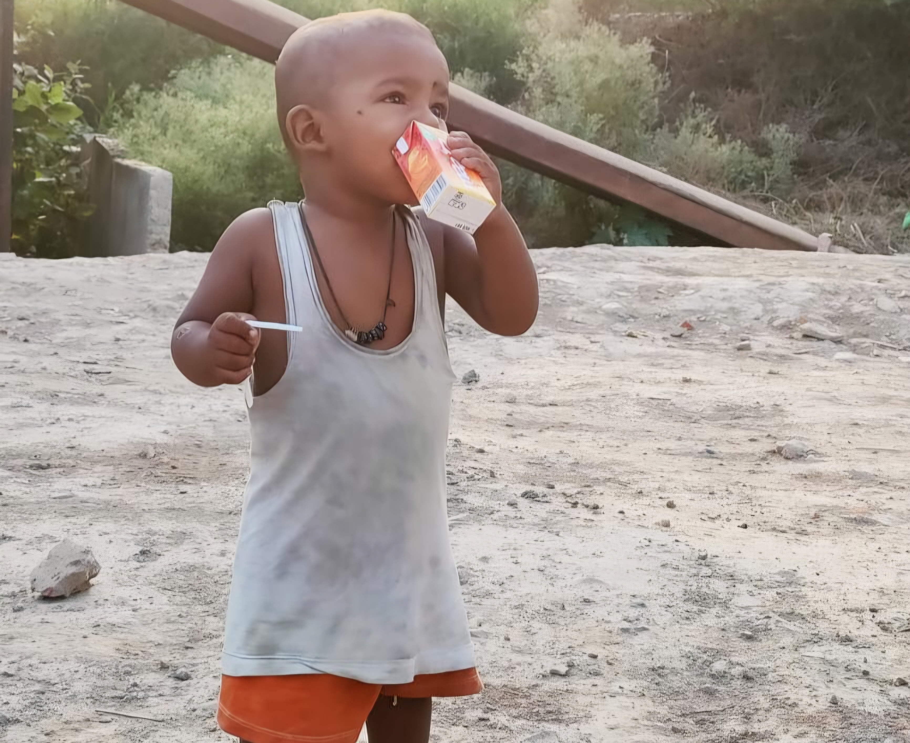

01
Project SEVA
Food distribution, clothing support, blood donation awareness and help for underserved communities.
NGO Awareness Webpage
InAmigos Foundation works for education, social welfare, animal care, women empowerment, environment and youth development across India.

About the NGO
InAmigos Foundation is a Section 8 non-profit organization founded on 23 September 2020 by Govind Shukla. It works through community projects and awareness campaigns that encourage people to contribute through volunteering, support, skills and social responsibility.
Ongoing Projects
Food distribution, clothing support, blood donation awareness and help for underserved communities.

Education, digital literacy and life-skill support for children needing better learning opportunities.

Animal welfare through feeding, care, rescue awareness and compassion for voiceless beings.

Women empowerment through skill development, awareness, independence and dignity.

Tree plantation, water conservation and environmental sustainability campaigns.

Youth development through internships, skill training, professional exposure and learning.
Social Impact
These campaigns connect volunteers, interns and communities with real social needs. The work supports education, relief, environment, empowerment, animal welfare and practical skill-building.
Campaign Gallery



Join Us
Fill this interest form to show your willingness to volunteer or support awareness campaigns.
Website: inamigosfoundation.org.in
Email: support@inamigosfoundation.org.in
Instagram: @inamigos
Purpose: Volunteer, support, collaborate or spread awareness.